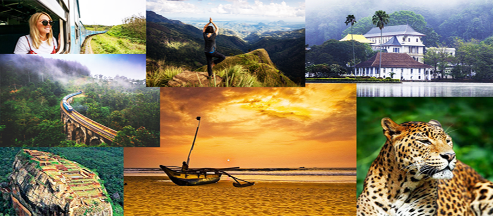
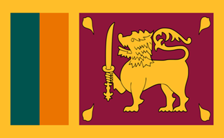
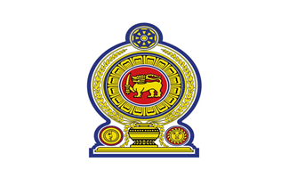
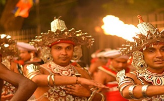

Sri Lanka, historically known as Ceylon and officially the Democratic Socialist Republic of Sri Lanka,
is an island country in South Asia. It lies in the Indian Ocean, southwest of the Bay of Bengal,
separated from the Indian peninsula by the Gulf of Mannar and the Palk Strait.
Sri Lanka shares a maritime border with the Maldives in the south-west and India in the north-west.
Gallery

Sri Lanka has a population of approximately 22 million people and is home to many cultures, languages,
and ethnicities. The Sinhalese people form the majority of the nation's population, followed by the Tamils,
who are the largest minority group and are concentrated in northern Sri Lanka; both groups have played an
influential role in the island's history. Other long-established groups include the Moors, Indian Tamils,
Burghers, Malays, Chinese, and Vedda.
National Flag

National Flag
The flag of Sri Lanka, also called the Sinhala Flag,
consists of golden lion holding a kastane sword in its right fore-paw in a maroon background with
four gold bo leaves, one in each corner. This is bordered by gold, and to its left are two vertical
stripes of equal size in teal and orange, with the orange stripe closest to the lion. The lion and the
maroon background represent the Sinhalese, while the saffron border and four bo leaves represent concepts of
meththa, karuṇā, muditā and upecka respectively with lion.
National Emblem

National Emblem
The national emblem of Sri Lanka is used by the State of the Sri Lankan government
in connection with the administration and government. The current emblem has been in use since 1972
and created under the ideas and guidance of Nissanka Wijeyeratne. At the time, he was Permanent Secretary to the
Ministry of Cultural Affairs and Chairman of the National Emblem and Flag Design Committee.The designer of the
emblem was Venerable Mapalagama Wipulasara Maha Thera and S. M. Seneviratne
Culture

Culture
The culture of Sri Lanka is influenced primarily by Buddhism and Hinduism.Sri Lanka is
the home to two main traditional cultures: the Sinhalese ( centred in Kandy and Anuradhapura ) and the Tamil
( centred in Jaffna ). Tamils co-existed with the Sinhalese people since then, and the early mixing rendered
the two ethnic groups almost physically indistinguishable. The Ancient Sri Lanka is marked for its genius
in hydraulic engineering and architecture. British colonial culture also has influenced later periods.